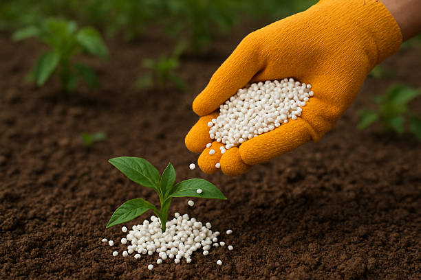
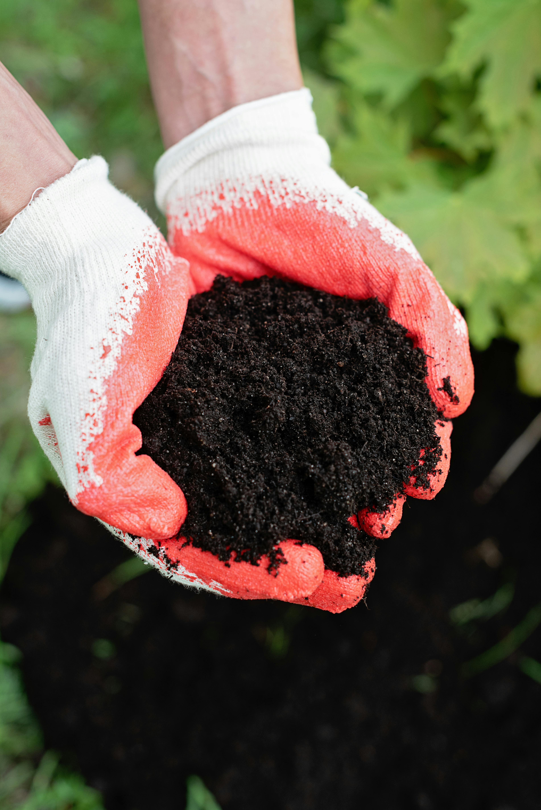
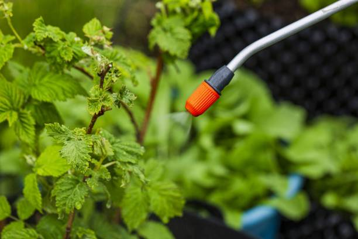

Engrais & Intrants Agricoles
Trouvez les meilleurs engrais organiques et minéraux pour optimiser vos rendements au Bénin.
Filtrer les engrais
Type d'engrais
Région / Disponibilité
Conditionnement

Engrais NPK 15-15-15
Sodéco SA
Idéal pour le coton, le maïs et le maraîchage. Formule équilibrée.

Urée 46%
ETS Bio-Agri
Engrais azoté pour stimuler la croissance végétative rapide de vos cultures.

Compost Organique Enrichi
Ferme Verte Bénin
100% naturel, améliore la structure du sol et retient efficacement l'eau.

Engrais Foliaire Liquide
Agri-Input Bénin
Absorption rapide par les feuilles. Idéal pour cultures maraîchères (piment, tomate).
Conseils d'utilisation
Quelques bonnes pratiques pour maximiser l'effet de vos intrants.
Analyse du sol
Avant toute application, assurez-vous de connaître les carences de votre sol pour choisir la bonne formule de NPK.
Dosage et Période
L'Urée s'applique généralement en plein développement. Évitez le contact direct avec les racines pour ne pas brûler les plants.
Stockage sécurisé
Conservez vos sacs d'engrais dans un endroit sec, ventilé et hors de portée des enfants et des animaux.